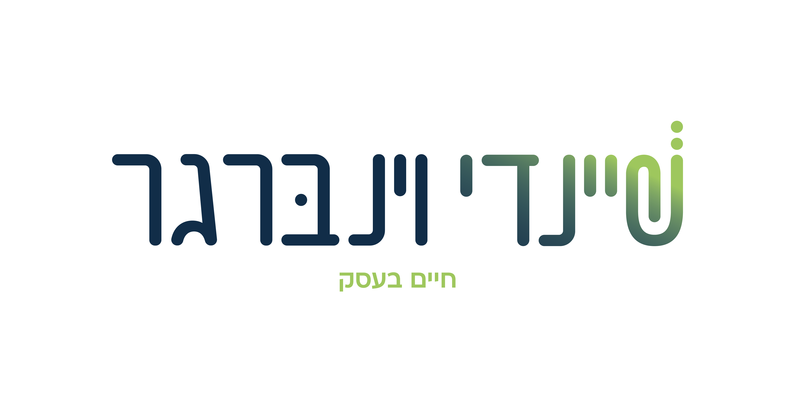

שיווק ופרסום וניהול וייעוץ עסקי וארגוני וקריאייטיב ומיתוג ויח"צ ו... השתתפת בקורסים טלפוניים ופרונטליים ובכנסים בזום, ביצעת אבחונים למציאת חסמים וקראת עשרות מאמרים. את משקיעה את הנשמה בעסק שלך, לא חסר לך ידע! אז למה, למה הוא עדיין לא זז??
למה עדיין אין לך את השקט לדעת שזו הדרך הנכונה עבורך
ואין לך את הביטחון שהפעולות האלו באמת מקדמות אותך?
אולי כי אף פעם לא הכנסת מפצחת לעסק?
מישהי שמציצה לעסק שלך לכמה דקות, רואה אותך, שומעת מה יש לך להגיד.
לא מוכרת לך קורסים מהפכניים או שולפת שיטות ש'עבדו על אלפי נשים'.
היא פשוט:
מתוך הקשבה מלאה, שאלות קונקרטיות, והבחנה חדה
עוזרת לך להפסיק להתרוצץ בין אלף כיוונים שונים
בהירה ומדויקת, מותאמת לתנאי השטח שלך בלבד
מסכמת איתך על –
כי ההגה תמיד נשאר בידיים שלך
וכשיש לך מפה — הדרך פשוטה וברורה.
"העסק לא זז פסיעה בלעדיי, ואני לא יכולה לעבוד בלי סוף שעות" – מתארת צילה, עורכת לשון, בכאב. "כשניסיתי להעביר עבודות לקולגות? היה הכי גרוע. עבדתי הרבה יותר קשה בתיקונים הלוך חזור, וכמעט לא הרווחתי :( אני מרגישה נוגעת בתקרת הזכוכית של העסק ולא מוצאת אומץ לפרוץ אותה, ואני גם פוחדת ממיסים שיאכלו לי את כל הרווח... יש דרך לצאת מזה?"
"את רוצה לצאת ממגבלות הזמן שלך" – סיכמתי את התסכול של צילה. "להרוויח יותר בלי להוסיף שעות ובלי לשלם מיסים שנוגסים ברווח. שימי לב שהפחד מתשלומי מיסים – חוסם לך את ההתפתחות וגורם לך בתת מודע להרחיק לקוחות". חידדנו את כל ההיבטים בעניין, כשאני מדגישה לצילה: "אני מציבה לך את השאלות הנכונות, ואת בתבונתך תגיעי לתשובות שמדויקות לך". כיוונתי אותה לרואת חשבון שתצמצם לה מיסוי, ואז הגענו יחד להברקה: להתחיל לעבוד עם לקוחות מחו"ל, שמסוגלים ורוצים לשלם יותר.
"התפנית הזו, יחד עם העסקת עובדת פרילנסרית, תעזור לי בס"ד לראות את הרווחים הגדולים" – מספרת צילה בסיפוק.
עוד לקוחות שפיצחו מספרות:
"לקוחות שואלים אותי כמה זמן העבודה תיקח, ואני לא יודעת מה להגיד להם. אין לי שמץ." – התוודתה פייגי, גרפיקאית מוכשרת. "ניסיתי לבנות לי סדר יום קשוח ונשבר לי, לא הייתי מסוגלת לעמוד בו. מצד שני, אני אכולת נקיפות מצפון מזה שהבטחתי ללקוח דד ליין ואני לא עומדת בו, זה גומר אותי רגשית. וזה חוץ מכל הרעיונות היפים שיש לי לפיתוח העסק ולא זזים לשום מקום כי אין להם תאריך יעד..."
"תיאום ציפיות" – אבחנתי את הנקודה שתוקעת אותה. "קודם כל עם עצמך ואח"כ עם הלקוחות. זה מה שיתן לך את היכולת לתת שירות יסודי כמו שאת אוהבת ולקוחות סופר מרוצים. האתגר שלך הוא קודם להבין את מגבלות הזמן שלך, כמה זמן באמת לוקח לך כל דבר – ולשקף את זה ללקוחות". כשפייגי קלטה מה תוקע אותה, היא ביקשה שאעזור לה להבין איך מחשבים נכון את הזמן, ולבנות לו"ז עם מקום לבלת"מים. סיכמנו על פגישה אסטרטגית מורחבת שבה נבנה מסגרת יציבה לעסק.
פייגי מסכמת: "סוף סוף יצאתי משחיקה רגשית וכלכלית ויישרתי את ההגה על מסלול של בהירות עסקית..."
עוד לקוחות שפיצחו מספרות:
"אני כל הזמן מדשדשת. יש לקוחות פה ושם אבל אני דורכת במקום, לא מצליחה לגדול" – סיפרה לי אילה, בעלת קייטרינג, בתסכול. "בניתי גם קורס, ואני לא מצליחה לסיים אותו ולהתחיל לשווק. די, נגמרה לי המוטיבציה להשקיע..."
"בתפיסה שלך את עדיין קטנה" – תיארתי לאילה, "ולכן את פוחדת לקחת מחירים של גדולים. כשתפנימי שאת לא מוכרת כדי להרוויח, אלא כי יש לך שליחות, תצליחי לקחת את המחיר שמגיע לך, השחיקה תעלם, ותקבלי בוסט של מוטיבציה". המשכנו בכלים פרקטיים לניהול, סודות קטנים לבניית מוטיבציה ולסיום פינקתי אותה בקורסי האסטרטגיה והתמחור החינמיים שלי.
"יש לי עוד עבודה עצמית לעשות," – מבינה אילה, "אבל עכשיו אני יודעת את הכיוון".
עוד לקוחות שפיצחו מספרות:
"יש לי המון חלומות לצמיחה ואני לא מצליחה ליישם אותם" – זה המונולוג של ברכי, רואת חשבון מצליחה. "לא יודעת למה זה קורה לי. אני טיפוס מסודר, איך הזמן מתגלש לי מהאצבעות? ואיך פתאום בעלי חוזר הביתה ואני עדיין על המחשב? כאילו מה, העסק חשוב לי יותר מהמשפחה?"
"את מתכננת יותר מידי משימות לאותו זמן, או שיש לך מסיחי דעת?" מיקדתי את ברכי. בתשאול קצר גילינו ש... גם וגם. "זאת בעיה ידועה של מצליחנים", הרגעתי אותה. "בואי נראה איך את יכולה לנהל את העסק שלך, ולא לתת לו לנהל אותך." הגענו יחד למסקנה שסדר יום מרווח והגיוני יותר, יחד עם הצבת גבולות מדויקים ללקוחות, הם הדבר.
"היה מתסכל כל-כך לסיים עוד יום בהרגשה של: אוף, עוד פעם לא הצלחתי" – ברכי משתפת בגילוי לב. "בזכות קיצור הדרך המחשבתי שעשית לי, אני אעבוד כל יום בכיף, ובלי להזניח את הדברים המשמעותיים באמת בחיים..."
עוד לקוחות שפיצחו מספרות:
מחכה לך!
כדי להחזיר גם אותך למסלול הצמיחה שלך.
495 ש"ח בלבד
ועלית על המסלול המדויק לך.
יש לך קוד קופון? הרוחת!
לא לשכוח להכניס אותו בדף הסליקה.
שום דבר לא בוער, ממש לא. אפשר לסחוב עוד כמה חודשים בעסק, לחטוף סחרחורת מהכאוס, לגמור כל חודש בתסכול עמוק כי ברור שאפשר להרבה יותר, ורק עוד חצי שנה לבוא לבדוק מה חוסם אותך... לא חבל?
יש לך קוד קופון? בדקת איזה מחיר מצחיק זה יוצא לך עכשיו?גם לי חבל על הכסף שלך, שיכול לפרנס בינתיים משפחה יהודייה. חבל מאוד. בדיוק לכן אני רואה שליחות לעזור לך לנצח את התקיעות, להרוויח הרבה יותר ולחיות בשפיות.
יש יועצות מעולות בשוק, אין ספק. ובכל זאת, נראה שחסר לך משהו אחר. ייעוץ קצרצר שיחדד לך את עצמך. יבחין בך, עם כל המכלול שלך ויתן לך את הכיוון. במחיר נמוך שיחזור אליך. הלקוחות שלי מספרות שאני כזו, אבל אין צורך להאמין להן. כדאי לנסות.
לנהל עסק זה מאתגר, ובדיוק לכן מגיעה לך פגישה שהיא קיצור דרך מחשבתי חריף. מגיע לך להפסיק לרדוף אחרי הזמן. להתחיל לנהל את העסק בכבוד.
"זה פשוט מטורף. זכיתי לפגוש אשת מקצוע בתחומה שעוזרת ומלמדת לפרק את העסק לגורמים ולעשות סדר."
יהודה פרוידנברגר"קודם כל העמדת אותי בפני המציאות — איפה אני נמצאת, האם מה שאני עוסקת באמת מתאים לי, לתנאי החיים שלי, בזכותך אני אמקד את עצמי מדויק יותר."
לימור זאיד"תודה נשמה! שתדעי שהפגישה איתך היא מתנה גדולה עבורי!!! את יודעת לרדת לעומקם של דברים ולהכניס לתבנית בצורה מדויקת כל כך!!"
אורטל לוי
מאמינה ביכולת שלך להרוויח בכבוד,
עם סיפוק ושליחות, ובלי להיאבד בדרך.
